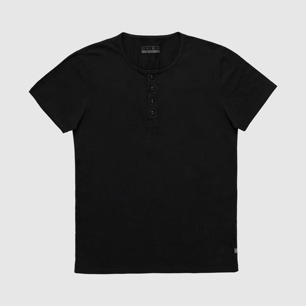
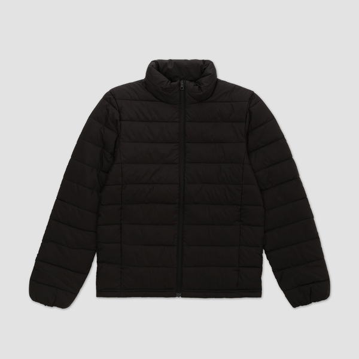

Moda e Acessórios
Itens para destacar o seu visual



Camiseta Consciência
- Algodão Orgânico
- Não possui etiqueta
- Cores diversas
R$ 59,90
Comprar Mais Detalhes
Leggin Biodegradável
- Cintura Alta
- Costuras reforçadas
- Modelagem anatômica
R$ 189,00
Comprar Mais Detalhes